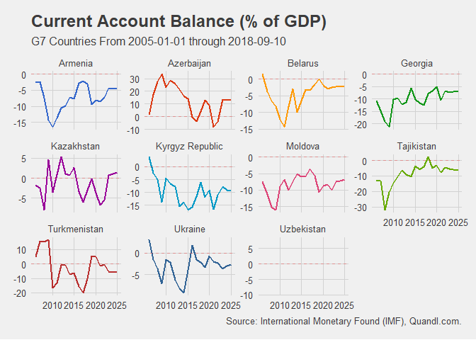

The goal of FromQuandl is to easy the search, download and data preprocessing steps that often happens when using the Quandl package in R.
Currently supports functions for IMF, World Bank and Yale Department of Economics datasets.
Installation
You can install FromQuandl from github with:
# install.packages("devtools")
devtools::install_github("Reckziegel/FromQuandl")Examples
Suppose you would like to download the Current Account Balance (as % of GDP) for all countries of a specific region or with similar economic characteristics, like the G7. Use the fq_imf_search() function to discover the Current Account code in Quandl.
fq_imf_search('account')
#> # A tibble: 2 x 2
#> imf_name imf_code
#> <chr> <chr>
#> 1 Current Account Balance, % of GDP BCA_NGDPD
#> 2 Current Account Balance, USD Billions BCANext use fq_imf() to download and plot the data.
ca <- fq_imf(countries = 'g7', indicators = 'BCA_NGDPD', start_date = '2005-01-01')
ca
#> # A tibble: 140 x 4
#> date country indicator value
#> <date> <fct> <fct> <dbl>
#> 1 2005-12-31 Canada Current Account Balance, % of GDP 1.93
#> 2 2006-12-31 Canada Current Account Balance, % of GDP 1.44
#> 3 2007-12-31 Canada Current Account Balance, % of GDP 0.823
#> 4 2008-12-31 Canada Current Account Balance, % of GDP 0.147
#> 5 2009-12-31 Canada Current Account Balance, % of GDP -2.91
#> 6 2010-12-31 Canada Current Account Balance, % of GDP -3.56
#> 7 2011-12-31 Canada Current Account Balance, % of GDP -2.71
#> 8 2012-12-31 Canada Current Account Balance, % of GDP -3.53
#> 9 2013-12-31 Canada Current Account Balance, % of GDP -3.14
#> 10 2014-12-31 Canada Current Account Balance, % of GDP -2.32
#> # ... with 130 more rows
ca %>%
ggplot(aes(x = date, y = value, color = country)) +
geom_line(size = 1, show.legend = FALSE) +
geom_hline(aes(yintercept = 0), color = 'red', linetype = 'dashed', alpha = 0.3) +
facet_wrap(~country, scale = "free_y") +
labs(title = "Current Account Balance (% of GDP)",
subtitle = "G7 Countries From 2005-01-01 through 2020-12-01",
caption = "Source: International Monetary Found (IMF), Quandl.com.") +
theme_fivethirtyeight() +
scale_color_gdocs()
The result is a tibble that it’s ready to be used in ggplot2.
There is no need to restrict the download to only one indicator. The indicators argument supports lists and vectors of strings as well, but be aware that may be safe using Quandl.api_key() if you want to access several time series at once.
As a second example imagine that you want to download the rate of change in poverty statistics from the World Bank for all countries in the Commonwealth of Independent States. Simply run
#library(FromQuandl)
# get poverty codes
poverty_data <- fq_wb_search('poverty')
# download data
fq_wb(countries = 'cis', indicators = poverty_data$code, transform = 'rdiff')
#> # A tibble: 1,616 x 4
#> date country indicator value
#> <date> <fct> <fct> <dbl>
#> 1 1998-12-31 Armenia Poverty gap at $1.25 a day (PPP) (%) -0.216
#> 2 1999-12-31 Armenia Poverty gap at $1.25 a day (PPP) (%) 0.0847
#> 3 2001-12-31 Armenia Poverty gap at $1.25 a day (PPP) (%) 0.0732
#> 4 2002-12-31 Armenia Poverty gap at $1.25 a day (PPP) (%) -0.273
#> 5 2003-12-31 Armenia Poverty gap at $1.25 a day (PPP) (%) -0.375
#> 6 2004-12-31 Armenia Poverty gap at $1.25 a day (PPP) (%) -0.1
#> 7 2005-12-31 Armenia Poverty gap at $1.25 a day (PPP) (%) -0.5
#> 8 2006-12-31 Armenia Poverty gap at $1.25 a day (PPP) (%) -0.333
#> 9 2007-12-31 Armenia Poverty gap at $1.25 a day (PPP) (%) -0.167
#> 10 2008-12-31 Armenia Poverty gap at $1.25 a day (PPP) (%) -0.4
#> # ... with 1,606 more rowsThe data is tidy and ready to be used with the %>% operator.
Additional information about the fq_imf(), fq_wb() and fq_yale() can be found at the package documentation.